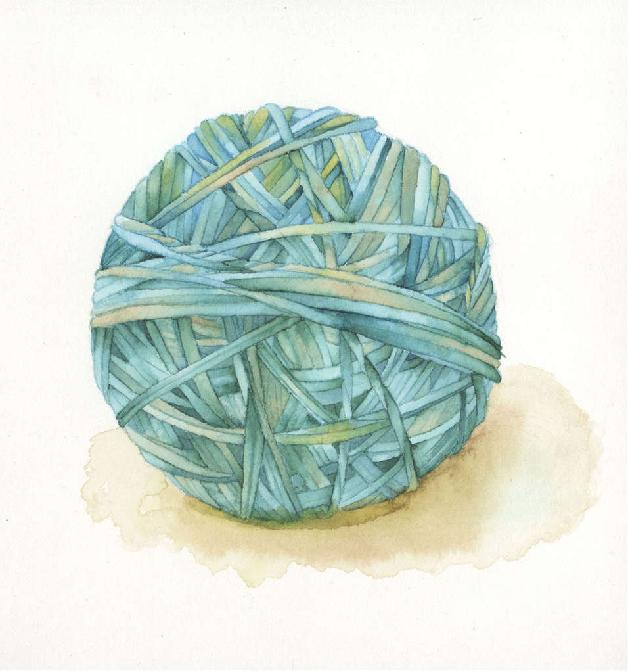
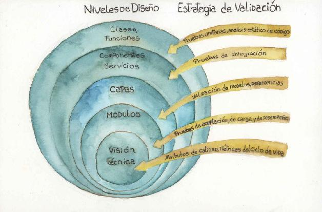
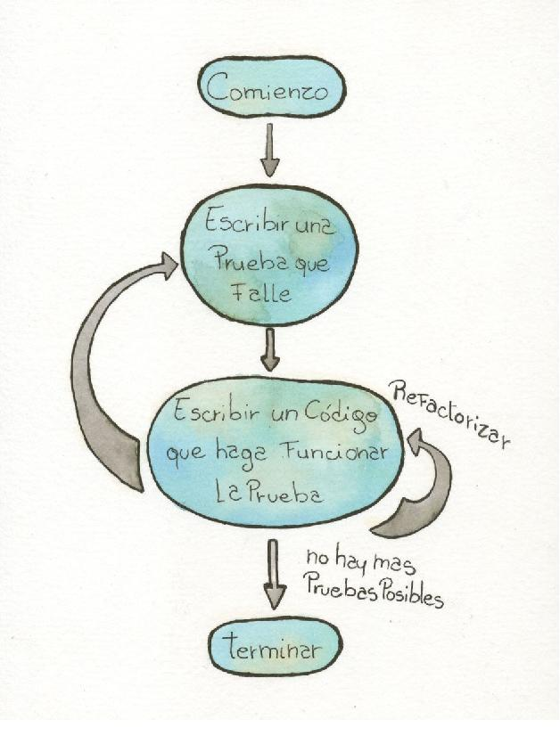
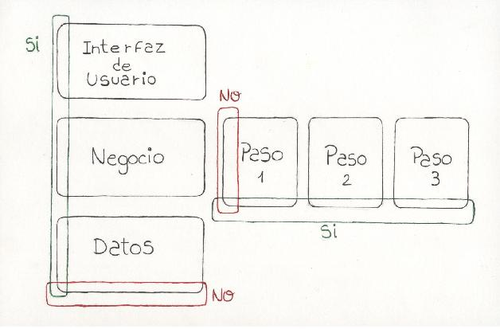

Arquitectura y diseño en emergencia
Introducción
Cuando construimos software, todo lo que hacemos es diseño, desde que decidimos las características a incluir en el producto hasta que se instala en el entorno en que será usado (podríamos incluso decir que la instalación requiere en la mayoría de los casos de una cuidadosa definición previa que también es diseño), pasando por la escritura del código. Contradictoriamente, en la mayoría de las estructuras organizadas de conocimiento sobre ingeniería de software, desde el CMMI hasta los planes de estudio de las universidades, el diseño de software como actividad no recibe mucha atención. Basta revisar cuántas materias se le dedican en una carrera de ingeniería en sistemas o computación, y cuántas áreas de proceso tiene en el CMMI para Desarrollo. La respuesta es una: Solución Técnica; dos, si contamos Integración del Producto.
Afortunadamente, el diseño es uno de los focos principales de nuestra actividad para una gran parte de la comunidad de ingeniería de software, en particular la más involucrada con la práctica de la construcción de software y no con la perspectiva de proceso. Basta pensar en el impacto que tuvo la publicación en 1994 del libro Design Patterns [Gamma 1994], o el fuerte contenido de diseño en las prácticas ágiles, desde el desarrollo guiado por pruebas y la refactorización, o el foco en el diseño que acompaña a todo el movimiento de Orientación a Objetos.
Este capítulo presenta la práctica de diseño de software desde nuestra experiencia, entendida como una actividad creativa y productiva, inserta en un contexto real con restricciones y objetivos, pero siempre dependiente de las personas, de sus experiencias pasadas de realizar diseños similares (o muy diferentes) y de la forma en que piensan.
También recorreremos algunos de los temas fundamentales del diseño de software, desde patrones y tácticas de diseño y arquitectura hasta las prácticas específicas de la agilidad, como el desarrollo guiado por pruebas.
¿Qué hace a un buen diseño?
Un buen diseño tiene algunas características, fáciles de identificar pero no de lograr en la mayoría de los casos.
• Correcto: cumple con resolver el problema.
• Claro: el diseño es fácil de comprender, tanto para su uso como para su modificación.
• Coherente: el diseño es estructuralmente consistente, sin contradicciones. Además, sus componentes forman parte de un todo armónico, sin divergencias ni elementos desalineados. La coherencia se describe en algunos casos como Integridad Conceptual.
Figura 7.1. Esta bola de bandas elásticas tiene un diseño coherente.

• Simple: menos es más, el diseño cumple con resolver el problema con los mínimos elementos posibles43.
• Elegante44: la apreciación estética del diseño produce una resonancia en el observador que lo acerca al diseño y le permite relacionarse con él de una forma especial, más allá de las características objetivas del mismo.
• Preciso: el diseño no trata ningún aspecto que no responda concretamente a una necesidad.
• Robusto: el diseño resiste cambios menores en el problema inicial45.
• Continuo (Suave46): pequeños cambios en el problema implican pequeños cambios en el diseño [Meyer 1985].
Tras un diseño emergente
Una de las características deseables de cualquier diseño es la simplicidad, que le aporta elegancia y lo hace fácil de comprender por otros. En el caso particular del software, dado que los problemas tienden a ser complejos y difíciles de comprender, crear diseños simples ayuda a no agregar complejidad al problema cuando pensamos la solución.
En la mayoría de los casos, sin embargo, es muy difícil lograr diseños simples cuando los problemas son complejos. Concretamente, tienden a ocurrir algunas de las siguientes cosas:
• La solución simple que encontramos no cumple con algunos aspectos del problema, pero sí con su mayoría, lo que hace necesario agregar parches al diseño para completarlo. El típico parche es un bloque condicional que solo sirve para un caso excepcional.
• El diseño agrega capacidades que no son estrictamente necesarias. Por ejemplo, agregamos un método a una clase solo porque parece fácil hacerlo (pero no tenemos en cuenta el costo de mantenimiento).
• Una solución resulta atractiva por su propia complejidad. Por ejemplo, asignar números primos para identificar opciones no excluyentes y luego calcular el producto de todos los factores primos para las opciones seleccionadas, para que al dividir ese producto por cada uno de sus factores primos pueda determinarse que están seleccionadas.
En todos estos casos, el resultado general es negativo, porque el diseño que logramos resulta peor que otras alternativas. Existen varias formas de lograr diseños simples, tratando las situaciones descriptas.
• Para ayudar a tener en cuenta todos los aspectos de un problema conviene tener múltiples personas interactuando para hacer el diseño. Así, las múltiples perspectivas aportan para cubrir todas las facetas del problema.
• Para evitar agregar capacidades, es necesario atar cada decisión de diseño a alguno de los aspectos del problema a resolver. Esta vinculación debe hacerse explícitamente, a priori y como parte del proceso de diseño, aunque también puede complementarse con una revisión posterior.
• Aprender a desapegarnos de nuestros diseños47 y valorar su simplicidad es algo que logramos con el tiempo, a través de múltiples experiencias propias y de ver el trabajo de otros, que cuando es simple pero cumple perfectamente con resolver el problema nos produce una impresión especial (nos afecta, a partir de que algo en su estructura resuena con nosotros [Austin 2012]).
• Hacer generalizaciones solo por inducción, cuando hay suficientes ejemplos para justificar la generalización a partir de los casos particulares. Por ejemplo, crear una jerarquía de clases con herencia solo cuando hemos construido dos o tres clases que aparecen como buenas candidatas a heredar de una clase padre común.
La primera y la última de estas recomendaciones son técnicas concretas para dejar emerger un diseño, como opuesto a definirlo completamente de antemano. La emergencia es una característica de ciertos sistemas complejos; en el primer ejemplo, un grupo de personas colaborando para producir un diseño y, en el segundo, un conjunto de aspectos del problema tratados iterativamente para definir una solución.
El diseño emergente requiere ciertas condiciones:
1. Diferir hasta el último momento prudente las decisiones: si decidimos antes, es poco probable que contemos con toda la información necesaria. ¿Cómo identificamos el último momento prudente? Cuando estamos a punto de perder alguna de nuestras alternativas de diseño debemos decidir; de otra manera, si se pierden las alternativas y nos quedamos sin opciones, lo que hacemos no es diseño.
2. Controlar dejando hacer: debemos aceptar que no todo el diseño está bajo nuestro exclusivo control para poder colaborar con otros.
3. No agregar cosas hasta no estar seguros de que son necesarias, aunque parezcan buenas (como en el ejemplo de la herencia, tendemos a querer usar las técnicas que aprendimos, aun cuando no son necesarias o incluso apropiadas).
Como planteamos, desapegarnos de nuestros diseños es un paso fundamental, porque nos permite aceptar que el diseño fluya desde nosotros pero no que esté totalmente bajo nuestro control.
Arquitectura y diseño en el ciclo de vida ágil
La arquitectura de software de un sistema es una visión técnica, compartida por los involucrados, sobre el diseño del mismo. Vista de esta forma, la arquitectura tiene un sesgo estratégico, pero no es necesariamente una representación completa de esa solución, sino más bien un idea de la dirección en la que el equipo piensa dirigirse en la búsqueda de la solución, y una guía tentativa para futuras decisiones de diseño. En ese marco, las futuras decisiones se tomarán de manera que estén alineadas con la arquitectura, o bien presentarán el desafío al equipo de redefinir la arquitectura para ajustarla a los nuevos descubrimientos. Estos pueden ser cambios en el contexto en la propia visión del equipo sobre la solución. Como ejemplo del primer caso, pueden mencionarse cambios en restricciones, requerimientos o actores. Ejemplos del segundo caso son las inconsistencias o incoherencias encontradas en el di seño al tomar una nueva decisión que degradan la calidad del mismo.
Figura 7.2. Niveles de organización y validación en una arquitectura48.

Una de las características de un proceso ágil es la validación iterativa temprana del producto. A nivel de arquitectura y diseño, la figura 7.2 muestra varios niveles de descomposición del diseño y estrategias de validación para cada uno. Como se ve en la figura, cada uno de los niveles está alineado con la visión técnica y con los demás niveles. En palabras de Frederick P. Brooks Jr., “Esto significa que en cada nodo de un árbol de decisiones, uno no enfrenta una simple elección entre múltiples opciones de diseño, sino una elección entre múltiples diseños completos tentativos” [Brooks 2010]. Esta idea integradora de la arquitectura no es contradictoria con otras definiciones más tradicionales. Algunas que nos resultan útiles son:
“la estructura o estructuras del sistema, comprendiendo elementos de software, las propiedades externamente visibles de esos elementos, y las relaciones entre ellos” [Bass 1997]49.
Es el conjunto de decisiones de diseño que es muy importante tomar correctamente (Ralph Johnson)50.
Es el conjunto de decisiones de diseño que es difícil cambiar [Fowler 2003].
En todas está presente la idea de su importancia estratégica, aunque cada una aporta una mirada propia.
Tácticas y patrones de diseño
Un ejemplo muy interesante de diseño emergente, propuesto por el grupo de arquitectura del Instituto de Ingeniería de Software (SEI) de la Universidad Carnegie Mellon, es el de seleccionar tácticas de diseño apropiadas para los atributos de calidad antes de seleccionar patrones de arquitectura51. La lógica es que las tácticas permiten una mayor granularidad en la selección de elementos de diseño que apliquen a un conjunto de requerimientos, y que el patrón de arquitectura (como superestructura) se selecciona al final de manera que le dé marco a esas tácticas o patrones de diseño. Este ejemplo es interesante porque proviene de la comunidad de arquitectura tradicional y promueve un proceso emergente de abajo hacia arriba, contrario a las aproximaciones tradicionales que progresan desde las grandes decisiones hacia el diseño detallado.
Desencuentros entre la agilidad y la arquitectura
Hay algunas diferencias en las comunidades ágil y de arquitectura sobre la aplicación de los principios y prácticas ágiles a la arquitectura de software. La mirada más tradicional tiende a ser más analítica y considera que el diseño se puede planificar en detalle al comienzo, mientras que la mirada ágil tiende a ver el diseño como un proceso empírico.
La mayoría de estas diferencias puede agruparse alrededor de unos pocos temas:
• Diseño inicial grande: algunos miembros de la comunidad ágil consideran a la arquitectura un caso de “diseño inicial grande” (big design up-front).
• Planificación y estrategia técnica: en la comunidad de arquitectura hay quienes consideran que la agilidad no tiene lugar para la planificación y estrategia técnica que puede implicar la arquitectura.
• Documentación: están difundidas las creencias erróneas de que la agilidad implica no documentar y que la arquitectura implica siempre documentar52.
• Tamaño: muchas personas creen que los principios y prácticas ágiles solo son aplicables en proyectos o productos pequeños, y algunas piensan lo contrario sobre la arquitectura.
Asumiendo un proceso iterativo por naturaleza, independiente de la agilidad, no es razonable considerar a la arquitectura un trabajo que ocurre solo en las primeras etapas del proceso, porque eso indicaría que todas las decisiones importantes ya se han tomado y, por lo tanto, que toda la información significativa ya estaba disponible; y, en ese caso, no tiene sentido pensar en que el proceso sea iterativo.
Los autores creemos que la arquitectura sirve para organizar no solo el producto sino también los equipos, que pueden o no seguir la estructura del producto, en proyectos grandes. Además, creemos que las prácticas ágiles son claramente aplicables en grandes proyectos, puesto que estos siempre necesitan subdividir el trabajo en equipos más pequeños53.
Más allá de estos puntos, que en casi todos los casos son diferencias de perspectiva y no problemas reales de aplicación, las comunidades ágil y de arquitectura tienen también varios puntos en común, en particular conceptos como la excelencia técnica y la deuda técnica sirven como punto de contacto54.
Deuda técnica: Término acuñado por Ward Cunningham [Cunningham 1992] para describir la degeneración progresiva de un diseño por no ser refinado. La metáfora de deuda tiene sentido porque cada modificación del código cuyo diseño es pobre implica un costo mayor (los intereses), que aumenta hasta que el producto no puede evolucionar y debe ser descartado.
Coherencia e integridad conceptual
Uno de los atributos más importantes de un diseño, tanto desde el punto de vista práctico como desde el estético, es la coherencia. Devin y Austin definen la coherencia como “la característica de un diseño de tener una trama bien construida”. En otros contextos, en general, al hablar de arquitectura de software, se utiliza la expresión “Integridad conceptual”. Ambos nos hablan de una característica esquiva pero difícil de ignorar cuando está presente, e imposible de fingir. Cuando experimentamos un diseño, tanto como creadores iniciales como usuarios, es fácil percibir si ese diseño es bueno o no. Esa percepción es una experiencia muy personal y que tiende a afectarnos, ya sea positiva o negativamente, por eso la metáfora de los olores resulta tan apropiada. Más allá de consideraciones analíticas como las que proponemos en las secciones anteriores, evaluar o crear un diseño coherente produce una resonancia particular en las personas involucradas:
“La gente se relaciona con esa ‘forma’ emergente y experimenta, por lo general no del todo conscientemente, su totalidad unificada. Las sensaciones que experimentamos cuando nos encontramos con una cosa especial surgen de la experiencia de esa forma, muchas veces a partir de la sensación de sorpresa que la gente siente cuando reconocen que la forma de una cosa emergente es mejor (más atractiva o más útil, digamos) que lo esperado o familiar”55 [Devin 2012], pág. 14.
Esta resonancia, aunque es una función estética, es muy importante a la hora de motivar a un equipo a usar un diseño y promover la alineación de nuevas decisiones con las anteriores. Mantener un diseño coherente a lo largo del tiempo, en particular a medida que el equipo cambia, es uno de los grandes desafíos de la organización.
Modelar o no modelar
Una confusión común relacionada con el diseño de software es considerar que diseñar es crear modelos, en general, diagramas, y a partir de ellos pasar a la codificación. Una definición de diseño que puede servir es que diseñar es decidir entre alternativas, y plasmar luego esa decisión. En esos términos, un modelo puede servir para plasmar esa decisión, pero no es la única manera. Por ejemplo, la representación en el código de una decisión de diseño es una forma válida, que tiene la ventaja de ser ejecutable directamente y no necesitar traducción. La desventaja, muy fuerte en lenguajes de bajo nivel, es la cantidad de detalles que es necesario plasmar en el código con el consiguiente ofuscamiento de la decisión de diseño involucrada. El uso de lenguajes de alto nivel orientados a objetos dinámicos facilitan la representación de decisiones de diseño en el código, aunque todavía están lejos de permitir representarlas todas. Como siempre, el camino ágil debe ser el camino del medio56, ni el extremo de plasmar todas las decisiones en documentos, ni el otro de creer que el código puede mantener toda la información necesaria. Un buen ejemplo de esto último son las razones por las cuales se tomó una decisión, que en el mejor de los casos pueden representarse en comentarios en el código.
Técnicas de diseño ágil
En esta sección describimos algunas de las técnicas de diseño típicas de los métodos ágiles.
Desarrollo guiado por pruebas
El desarrollo guiado por pruebas es una técnica de diseño definida por Kent Beck a partir de su experiencia en desarrollo con lenguajes dinámicos como Smalltalk.
Esta técnica, a veces identificada con la idea de Test-First (probar primero), pero mucho más comprensiva, propone hacer crecer el código orgánicamente a partir de pruebas unitarias57 que fallan inicialmente y promueven la escritura del código necesario para que esas prueban pasen.
El ciclo de desarrollo guiado por pruebas es:
1. Escribir una prueba que falle, en código.
2. Escribir el mínimo código necesario para que esa prueba pase.
3. Si emerge la necesidad de emprolijar el código, modificarlo sin cambiar su comportamiento, de manera que las pruebas sigan pasando. Este paso es conocido como refactorización.
4. Repetir el proceso desde el punto 1, refinando la prueba o agregando una nueva prueba.
El ciclo es claramente iterativo y por incrementos, tanto en las pruebas como en el código funcional, con cada paso correspondiendo a un pequeño cambio en el código o en las pruebas. Requiere facilidad para correrlas luego de cada paso58.
Una de las objeciones o confusiones más comunes está en el tamaño apropiado de cada paso (refinamiento o incremento). Una heurística para este caso es agrandar el tamaño si siguiendo el proceso no tenemos sorpresas (es decir, siempre que las pruebas pasen o fallen cuando lo esperamos), y disminuirlo cuando tengamos sorpresas.
Algunas ventajas de hacer desarrollo guiado por pruebas son:
Figura 7.3. Diagrama de estados del proceso de desarrollo guiado por pruebas.

• Como escribimos las pruebas al principio, reducimos el riesgo de no tener pruebas porque se acabó el tiempo.
• Como escribimos pruebas que inicialmente fallan, sabemos que las pruebas son sensibles al código que escribimos59 o, dicho de otra forma, que realmente evalúan el código bajo prueba.
• Poder ejecutar fácilmente pruebas automatizadas después de cada cambio nos da el coraje necesario para modificar el código sin temor a una regresión.
• Promueve código simple, modular y con bajo acoplamiento, porque si tiene muchas dependencias es muy difícil escribir pruebas unitarias.
• Las pruebas están escritas en el mismo lenguaje que el código, facilitando la especificación de pruebas por parte de los desarrolladores.
• Las pruebas se escriben como parte de la actividad de desarrollo, promoviendo que los desarrolladores requieran en forma temprana información y mejor aún, trabajo de a pares con testers, analistas, etc., favoreciendo la integración multifuncional del equipo.
• Está ampliamente soportado por herramientas y frameworks.
• Las pruebas escritas documentan los requerimientos implementados.
Cualquier defecto se trata revisando primero las pruebas. En concreto, esto permite reproducir errores en otros entornos, detectar pruebas faltantes o limitadas, y simplifica la navegación del código, porque iniciamos nuestra búsqueda de un defecto desde las pruebas, y no desde la estructura modular.
Las pruebas disminuyen el costo de los cambios futuros y ofrecen análisis de impacto de los cambios.
Algunas desventajas del desarrollo guiado por pruebas son:
• Requiere un cambio profundo en la práctica de los desarrolladores. Lo más difícil, muchas veces, es el cambio de mentalidad.
• Requiere una inversión inicial en infraestructura de pruebas, que puede ser muy básica o muy compleja dependiendo de la tecnología y del proyecto60.
• Requiere invertir un esfuerzo en la construcción de las pruebas que no es negociable. Aunque pueda parecer alto, el esfuerzo involucrado tiende a ser menor que lo esperado una vez que los equipos conocen bien la técnica, pero lo que sí es inevitable es que con esta práctica, el esfuerzo de prueba no es sacrificable, con lo cual se frustran opciones perniciosas como costos eliminando las pruebas en etapas posteriores a la construcción.
Figura 7.4. Ejemplo de prueba unitaria incipiente en Java y JUnit que podría iniciar un proceso de desarrollo guiado por pruebas para una jerarquía de cuentas bancarias.
import static org.junit.Assert.*;
import org.junit.Test;
public class TestCuenta {
@Test
public void deberiaCrearseConSaldo0(){ Cuenta cuenta = new Cuenta(); assertEquals( 0, cuenta.saldo() );
}
}
Refactorización
Como vimos, el proceso de desarrollo guiado por pruebas propone una actividad de mejora del código llamada refactorización. El propósito principal es mejorar la calidad interna del código y el diseño en forma independiente de la funcionalidad implementada, que está garantizada por las pruebas. El proceso propone que la necesidad para refactorizar emerge de las modificaciones sucesivas del proceso y, por lo tanto, no está sesgada por una definición a priori. En general, como vimos en la sección de diseño emergente, esto difiere complejizar el diseño hasta que es claramente necesario (porque observamos la degradación del código, no la pronosticamos).
El concepto de refactorización ha tenido profundo impacto en la comunidad de desarrollo de software: existen múltiples libros que tratan específicamente del tema61, e incluso ciertas prácticas como el uso de patrones de diseño, uno de los más significativos avances de la comunidad de desarrollo de software de las últimas décadas, está cada vez más asociada a la refactorización.62
Las operaciones de refactorización están formalizadas en la bibliografía y múltiples herramientas de desarrollo. Algunos ejemplos concretos son:
Extraer método: crear un método a partir de un conjunto de líneas de código, para aumentar la claridad y reducir la redundancia.
Extraer clase madre: separar una clase en dos, una madre y otra hija. Permite crear una jerarquía a partir de una clase cuando existe comportamiento variable.
El concepto de refactorización, más allá del término, hace mucho tiempo que está presente en el mundo del software, como la idea de que el mantenimiento de un sistema debe implicar una reinversión periódica en mejoras internas de la estructura del sistema para permitir su evolución futura. En [Jacobson 1992] los autores proponen como analogía el concepto de entropía, con la idea general de que modificar un sistema sin reorganizarlo implica inevitablemente aumentar su complejidad.
Olor (Smell): Término acuñado por Kent Beck y Martin Fowler para describir cuando el código se ha degradado y emerge la necesidad de una refactorización. Ejemplos son: métodos demasiado largos, redundancia, nombres de variables confusos, etc.
Esqueleto caminante63/desarrollo orgánico
Esta técnica propone crear desde el principio un incremento del sistema que contenga en forma embrionaria todos los elementos futuros, o por lo menos sugiera la estructura final del sistema. La idea es que los componentes principales de la arquitectura estén presentes, normalmente en forma de cáscaras vacías, que permiten la integración de punta a punta del sistema y probar el concepto de la arquitectura. A partir de ahí, cada incremento o refinamiento hace crecer los componentes, pero siempre manteniendo funcional la integración del sistema como un todo. Esto permite evitar los riesgos de una integración tardía, como discutiremos en el capítulo “Integrando el producikto al instante”. Además sirve para plasmar en forma temprana la estructura del sistema y tener una validación de la visión técnica.
Figura 7.4. Distintos cortes de una arquitectura de 3 Capas, los que dicen sí, promueven el desarrollo orgánico.

Diseño colaborativo
En el capítulo “Quién manda a quién” vamos a desarrollar en detalle el concepto de colaboración, por ahora presentamos en esta sección algunas de las dinámicas propias de la agilidad para la toma de decisiones de diseño.
Sesiones de diseño colaborativo: el equipo de desarrollo (no solo el arquitecto) participan de sesiones de intercambio de ideas y toman decisiones en conjunto. Es fundamental contar con un pizarrón para poder plasmar fácilmente (y también borrar) las ideas propuestas. El entorno debe ser abierto (por ejemplo, es mejor si evitamos empezar cada frase con la palabra “NO”), escuchar las ideas de todos y el arquitecto en su rol de facilitar la reunión y aportar su experiencia y visión en pos de los objetivos del negocio.
Toma de decisiones: en muchos entornos se considera que el arquitecto debe tomar todas las decisiones de arquitectura. En cambio, en un equipo ágil buscamos que el conjunto de las habilidades y experiencias hagan emerger un diseño mejor en forma colaborativa, por lo tanto ese rol puede estar limitado a guiar al resto del equipo y ayudarles a aprender. Tobías Mayer64 destaca la diferencia entre consenso y consentimiento. La autoorganización no significa que el disenso sea algo malo ni que deba frenar a un equipo que no logra tomar una decisión. La idea de consentimiento es que los miembros del equipo, cuando no logran consenso más allá de un cierto tiempo limitado determinado de antemano, pueden aceptar las ideas de otros, aún si creen que la propia es mejor. Una alternativa límite es que el arquitecto resuelva en caso de desacuerdos que no pueden ser reconciliados.
Actitudes de buen diseñador
Una mirada ágil no puede dejar de lado las actitudes y aptitudes del diseñador como persona. Estas son algunas de las cualidades que hacen a un buen diseñador:
• Diseña para gente (usuarios, desarrolladores, administradores, operadores, etc.).
• Es creativo.
• Ofrece razones, explica y escucha a los demás.
• Hace participar a otros.
• Promueve y soporta un lenguaje compartido del diseño.
• Diseña a partir de su experiencia pero está abierto a las sorpresas.
• No está aferrado a sus propias ideas y diseños.
En resumen
En este capítulo propusimos algunas de las cuestiones principales del diseño y arquitectura de software en entornos ágiles. Recorrimos los puntos de contacto y desencuentro, que no son tantos ni tan profundos como puede parecer, entre las comunidades ágil y de arquitectura. También repasamos las características de un buen diseño, en particular la simplicidad, y de un buen diseñador. Finalmente vimos algunas de las principales técnicas propias de la agilidad, como el desarrollo guiado por pruebas y el esqueleto caminante. Esperamos que estas ideas los motiven a profundizar en los temas tratados y a intentar aprender las prácticas a través de aplicarlas a situaciones reales.
43 Una alternativa que proponen Devin y Austin es que sea tan complejo como sea posible sin dejar de ser accesible [Devin 2012].
44 Martin Fowler y Kent Beck acuñaron la expresión “olor” para describir un mal diseño que ofende nuestras sensibilidades, véase el recuadro en p.101.
45 Como opuesto a frágil.
46 El término suave es nuestro.
47 Alan Cyment enfatiza la humildad intelectual como parte del espíritu de la agilidad [Cyment 2012].
48 Adaptado de [Fontdevila 2010].
49 La traducción es nuestra, el original en inglés es “the structure or structures of the system, which comprise software components, the externally visible properties of those components, and the relationships among them”.
50 Correspondencia citada por [Fowler 2003].
51 Véase [Bass 2003], capítulo 5, esta referencia es específica a la segunda edición de 2003.
52 En palabras de Martín Salías, uno de los referentes de la comunidad ágil en América Latina, “La arquitectura es como el diseño, podés no ocuparte de ella pero siempre vas a tener una, que en ese caso probablemente no sea muy buena”.
53 Véase el capítulo Todo muy lindo pero…
54 Véanse ejemplos de la iniciativa de arquitectura y agilidad del SEI, Instituto de Ingeniería de Software, en [SEI 2013].
55 La traducción es nuestra, el original en inglés es “People engage with that emerging ‘shape’ and they experience, usually not completely consciously, its unified wholeness. The feelings we experience when we encounter a special thing arise from an experience of form, often from the sense of surprise people feel when they recognize that the form of an emergent thing is better (more attractive or more useful, say) that the expected of familiar”.
56 Expresión propia del budismo utilizada por Alan Cyment durante sus cursos de Scrum para explicar cómo la agilidad reconcilia pragmatismo a corto plazo con idealismo en el mediano y largo plazo.
57 Como vimos en el capítulo “Empezando por la aceptación”, en realidad hay otras técnicas como ATDD que son guiadas por pruebas distintas de las pruebas unitarias.
58 Aun sin entornos integrados de desarrollo, algunas herramientas soportan este proceso mediante la ejecución periódica frecuente de las pruebas, como en el caso de JavaScript.
59 Al cambiar el código que hacía que una prueba falle y ver que luego de ese cambio la prueba pasa, asumimos que es ese cambio lo que produjo el efecto observado y, por lo tanto, que estamos probando el código (en realidad, esto es una falacia conocida como post hoc ergo propter hoc. Pero en la mayoría de los casos es aplicable, puesto que las pruebas no deberían depender de otros aspectos volátiles como, por ejemplo, la hora a la que fueron ejecutadas).
60 Por ejemplo, algunos lenguajes de alto nivel y sobre todo algunos frameworks proveen herramientas muy accesibles de pruebas unitarias, mientras que en lenguajes como C++ tienden a ser más complejas. En general, existen implementaciones muy simples de bases de datos en memoria y frameworks de soporte (por ejemplo mocking) que permiten realizar implementaciones muy poderosas con simpleza. Sin embargo, si esta inversión no se realiza al principio del proyecto, los costos y la complejidad tienden a aumentar muy rápidamente.
61 Véase [Fowler 1999] y [Kerievsky 2005].
62 Existe un libro especializado en este proceso, véase [Kerievsky 2005].
63 Walking skeleton, término acuñado por Alistair Cockburn, véase [Cockburn 2004].
64 [Mayer 2013], capítulo “Seeking Consent”, pág. 144.